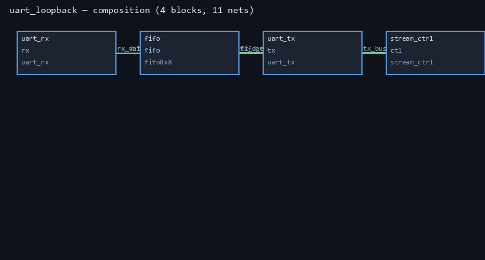
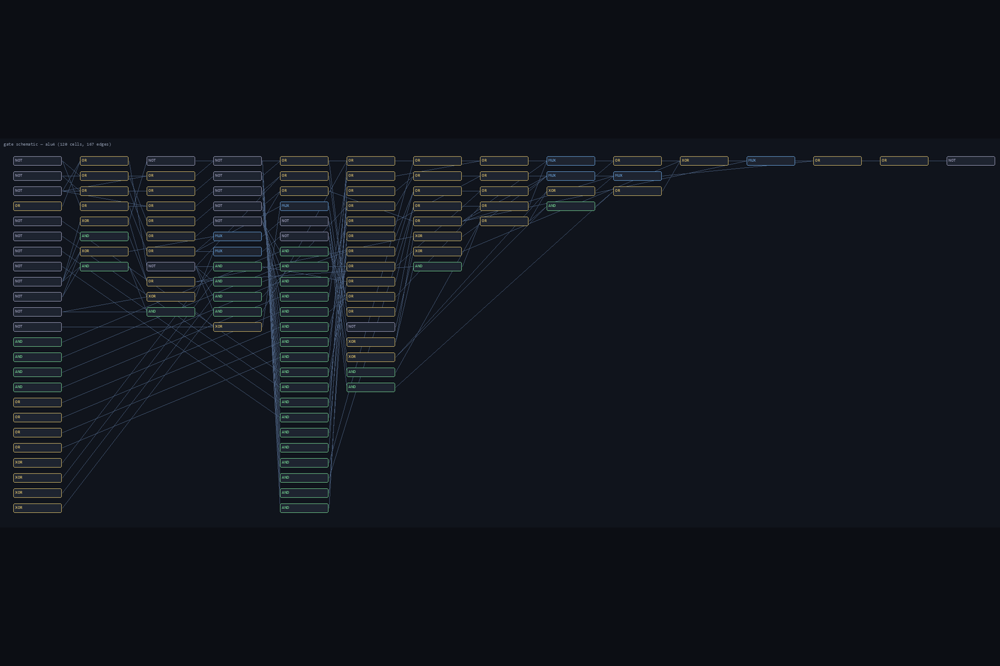
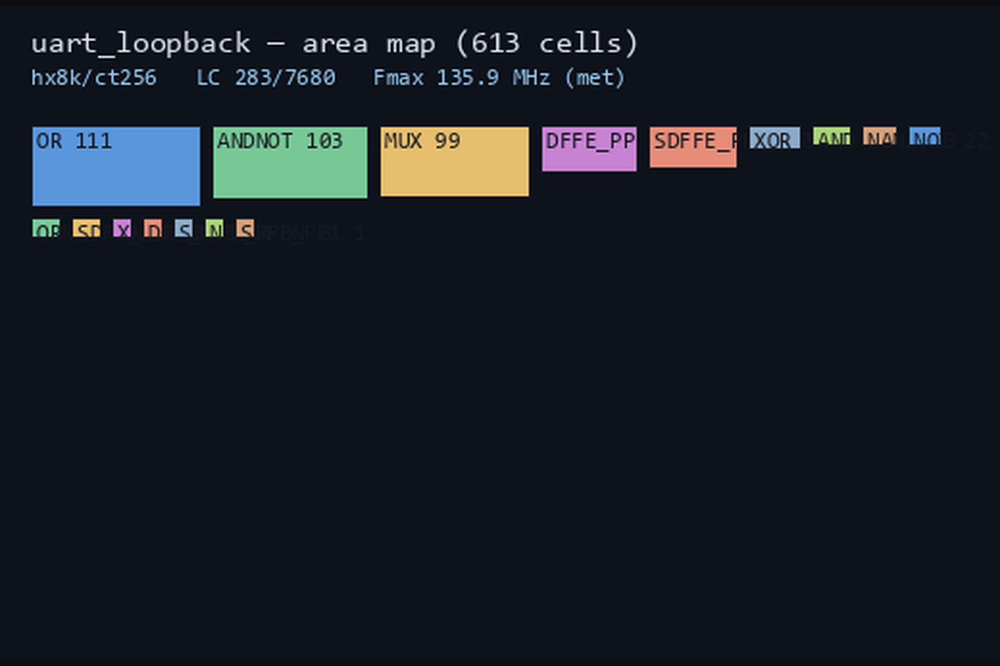
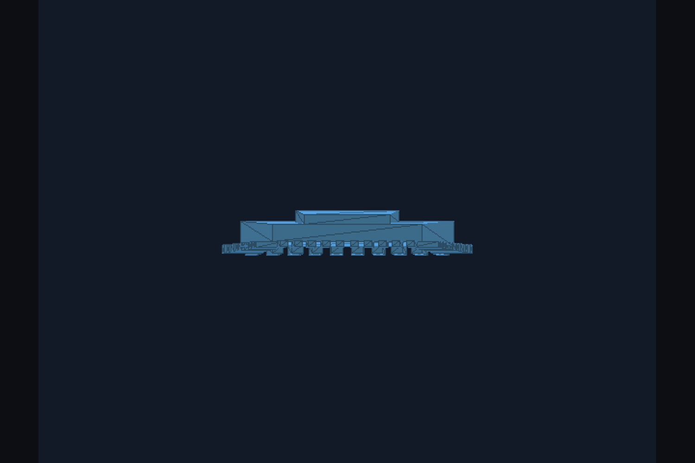

Describe a chip in English. Coal writes the RTL, writes an
independent reference model of the specification, and refuses to call it
finished until a real toolchain agrees with both.
Every “AI writes Verilog” demo has the same hole: the model writes the
design and the test, so the test agrees with the bug. It looks
right and isn’t. Coal removes the model from the trust path.
A pass means the design matches the specification — not that it
matches itself. The testbench is generated, so nobody can edit it into
agreement with a broken design.
What is real today
44/50
catalogue designs pass the full gate
70
deterministic generators, 39 with independent reference models
431
agent tools, 22/22 live self-checks
5
gate stages with veto power, not advice

The UART loopback chip as Coal sees it: four blocks, eleven
nets, every connection width-checked before a line of Verilog is
emitted.
Measured, including the failures
Measurement
Result
Agent builds a chip end-to-end
PASS — all five stages
6 novel combinational designs
6/6, all first try
4 sequential designs, crisp specs
3/4
10 catalogue designs, terse specs (one-shot)
2/10
Same, with up to 2 repairs
5/10
Local 7B, same task, with repair
3/10
The interesting number is not the
score. It is that the small model gained +0 from the gate’s
error feedback and Nemotron gained +3. The gate is a
feedback channel, not just a filter.
The chip, as the tool sees it

Gate-level schematic from the synthesised netlist.

Area / die map — where the cells actually land.

3D package generated from the same netlist.
Run it
# hosted inference (optional — falls back to local Ollama)
$env:NEBIUS_API_KEY = "..."
$env:COAL_BASE_URL = "https://api.studio.nebius.com/v1"
$env:COAL_AGENT_MODEL = "nvidia/nemotron-3-super-120b-a12b"
cd Coal\lm_track\coal_chat
# build and verify a chip
py -3.15 -c "import chipflow; r = chipflow.build('demo', spec='an 8-bit counter'); print(chipflow.summary_text(r))"
# the terminal UI
coal_tui\coal-tui.exe
The toolchain runs inside WSL;
Coal detects it and installs iverilog verilator yosys gtkwave
nextpnr-ice40 if missing.
Honest limits
44/50, not 50/50. The six failures are listed with exact reasons.
FPGA, not ASIC. Timing is real iCE40 place-and-route; ASIC mapping is future work.
It is not a chip designer. 3/4 on well-specified sequential logic, 2/10 on terse specs. The toolchain is the only reason to trust any of it.
No local GPU. The GPU work happens in Nebius inference.